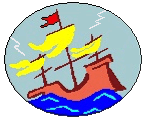

IRISHWRECK ONLINE
Home
About
Site Awards
Contact
A DIVER'S GUIDE TO
THE SHIPWRECKS
AROUND IRELAND
10,336 VESSELS ARE APPROXIMATELY WRECKED
AND/OR STRANDED
Search bar for website information
Map of Irish Shipwrecks
Select an Item below to Learn More
Latest Updates
Weekly updates on new shipwrecks and discoveries
List of Wrecks by County
Links to all the Shipwrecks in Ireland, categorized by County
Dived Wrecks by Name
Links to all the previously dived Shipwrecks in Ireland
Illustrations of Ship Types
Detailed drawings of the architecture of the wrecked ships
Website Terminology
List of all the obscure terminology used in this website
Website References
Lists all the other shipwreck websites that we reference
Do you have any photos of any vessels listed on this site? Email me a copy if I can add them to the site. Full credit will be given. Thank you.